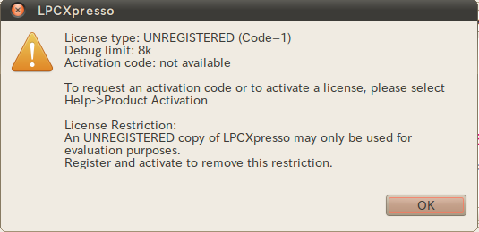

情報センターの PC にはロボカープログラム開発用に
LPCXpresso 6.0.2 をインストールした
(2013/09/30 現在、最新)。
C言語の学習、および、ロボカープログラム開発は LPCXpresso を使う。
LPCXpresso は 2013/10/03 現在、バージョン6.0.2が最新だが、
残念ながら、情報センターでは安定に動作しない。
ちょっと古いがバージョン４を使う。
しかし、LPCXpresso バージョン４は、プログラムの開発、 バイナリのコンパイルまでできるが、肝心のロボカーへの焼付けができない。 みんなの作ったバイナリは 私の Mac に転送 し、 ロボカーへ焼きこむ。この手順に慣れよう。
個人PC(Mac, Windows)に LPCXpresso をインストールし、 授業中それを使うことにすれば問題は解決する。 個人PC の使用を奨励する。
$ lpcxpresso &
/home/t/########/robocar/workspace
をこたえて OK ボタンを押す。 ######## の部分はログインに使うアカウント(半角英数字８ケタ)。 まちがうと成績評価されない。正確に。
情報センターPCで起動するのは評価版。 大きなプログラムは作れない。 自分PCにインストールし、 開発元からライセンスキーを取得すると、この制限がなくなる。
受講生が作るロボカープログラムの平均的なサイズは 3k。 最近３年間で制限の 8k を越えたグループはなかった。 OKボタンを押して進む。